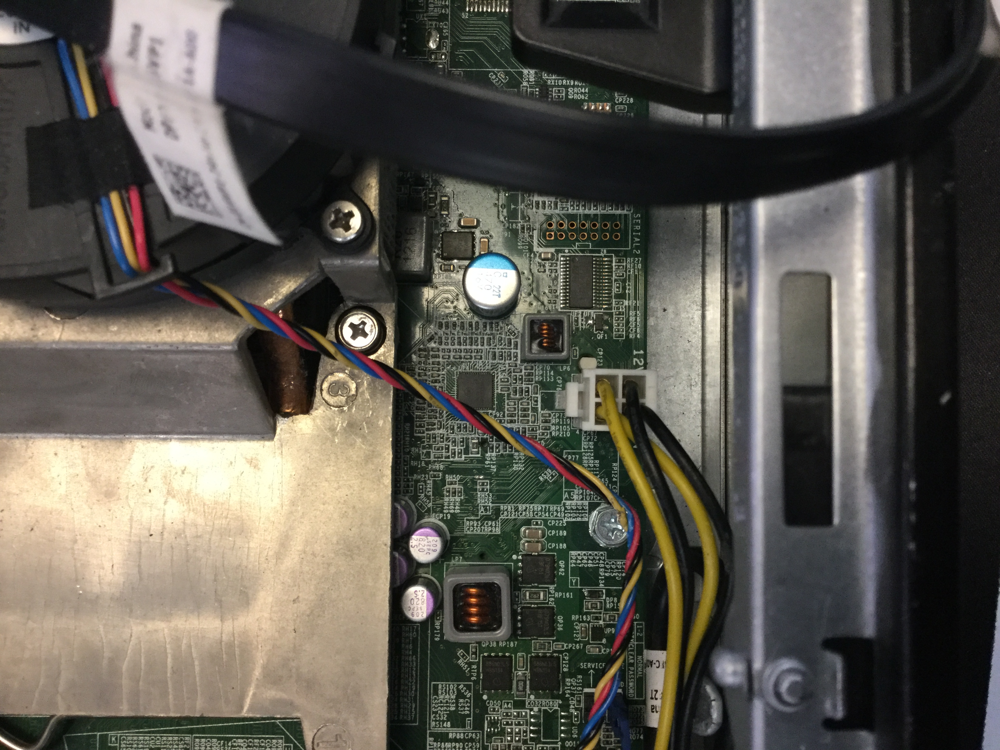
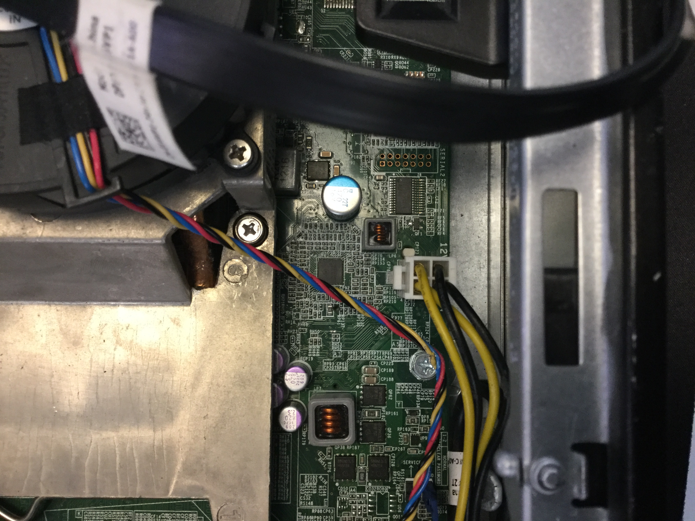

Problems
The list of ten common problems to have while taking a computer apart or simply rebuilding one.
- Buying incompatible components.
- Not doing cable management.
- Leaving plastic on parts.
- Slotting the RAM wrong.
- Plugging monitor into motherboard instead of GPU.
- Applying just ther right amount of force.
- Trying to plug in the wrong cables.
- Careless handling of parts.
- Working on it while its plugged in.
- Squashing cables.